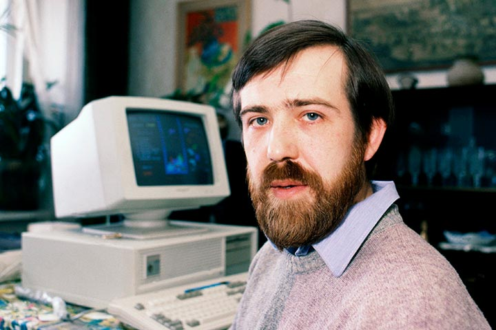
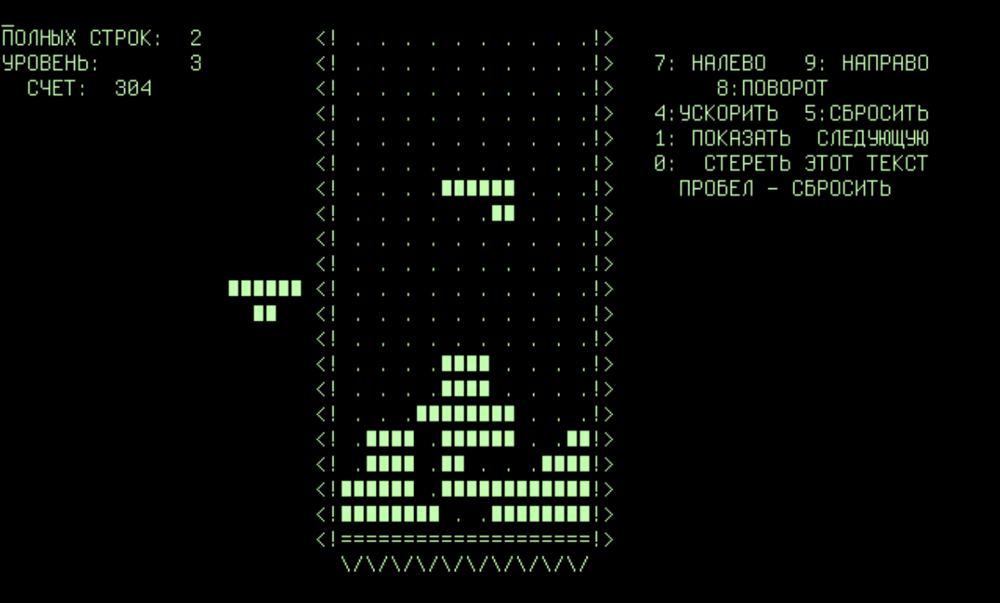
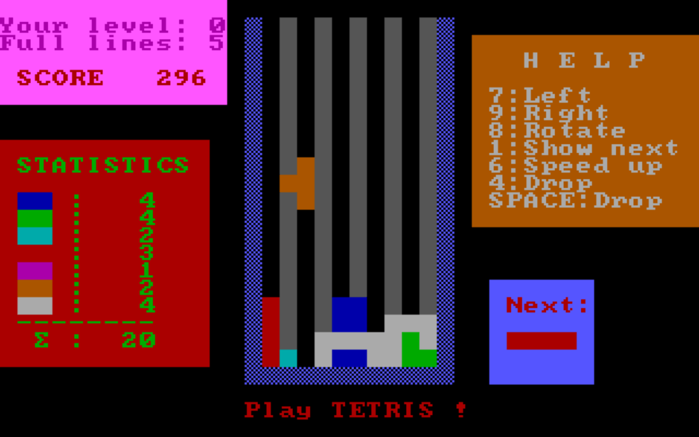

ИСТОРИЯ ПОЯВЛЕНИЯ ТЕТРИСА
Алексей Пажитнов работал в Вычислительном центре Академии наук СССР. Он изучал искусственный интеллект и распознавание компьютером человеческой речи. Иногда Пажитнов ночевал на работе и, чтобы отдохнуть, экспериментировал с созданием головоломок, которыми увлекался ещё с детства.
Вдохновение приходило к нему в неожиданные моменты. Дэвид Шефф в книге «Game Over. Как Nintendo завоевала мир» рассказывает, как Пажитнов гулял по океанариуму и был заворожён камбалой, которая, оказавшись рядом с водорослями, моментально меняла цвет с коричневого на зелёный. Так ему пришла мысль о фигурках, которые могли бы быстро менять свой цвет или форму. Идея «Тетриса» родилась, когда Пажитнов наткнулся на детскую настольную игру «Пентамино». Смысл головоломки в том, чтобы сложить вместе несколько плоских фигурок, каждая из которых состоит из пяти одинаковых квадратов.
 Программист начал экспериментировать, решив создать её компьютерную версию, но остановился на более простом варианте, где элементы были сложены из четырёх квадратов. Такие фигурки он назвал «тетрамино», от греческого «тетра» — «четыре». Пажитнов добавил к этому слову название своего любимого вида спорта, тенниса, и получил «Тетрис». Первый «Тетрис» был написан для советского микрокомпьютера «Электроника-60», на котором Пажитнов работал в Вычислительном центре. Поэтому элементы игры состояли из пробелов, ограниченных с двух сторон скобками. Ни цвета, ни музыки тоже не было. Усовершенствовать игру Пажитнову помогли коллеги.
Цветную версию «Тетриса» написал программист Вадим Герасимов. В школе он выделялся среди сверстников: знал языки программирования Basic и Pascal, умел взламывать защиту компьютера и запускать вирусы. Мальчику было 16 лет, когда учитель информатики привёл его в Вычислительный центр Академии наук, чтобы потренироваться в программировании. Там его заметил коллега Пажитнова Дмитрий Павловский и пригласил вместе поработать над «Тетрисом». Герасимов самостоятельно разобрался с операционной системой MS DOS и переписал головоломку для компьютера IBM. «Когда я делал “Тетрис”, меня даже не могло взять на работу ни одно государственное учреждение, мне было слишком мало лет. Я делал это просто ради удовольствия», — рассказывал программист.
Вместе Пажитнов, Павловский и Герасимов изменили игру: маленькие «тетрамино» стали разноцветными, появилась табличка с подсчётом баллов.

Первые копии «Тетриса» были бесплатными, их раздавали на дискетах сотрудникам центра. Игра начала набирать популярность в московском кругу компьютерщиков, и у Пажитнова, Павловского и Герасимова появился первый бизнес-проект. Программисты планировали собрать около десятка игр для ПК, включая «Тетрис», в одну систему, которую они назвали «компьютерным луна-парком». За пару месяцев они разработали несколько игр в цвете, с графикой и звуком и представили некоторые коллегам по центру.
Единственная проблема состояла в том, чтоб продать разработку, ведь заниматься частным предпринимательством в СССР запрещали. Чтобы дать жизнь хотя бы «Тетрису», Пажитнов отдал права на него компании «Электроноргтехника» («Элорг»). Она обладала монополией на импорт и экспорт электронного оборудования и программного обеспечения в СССР. Все соглашения с партнёрами и планы по продаже игры проходили через неё.